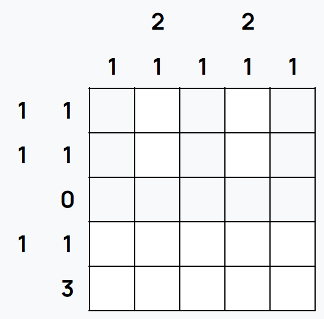
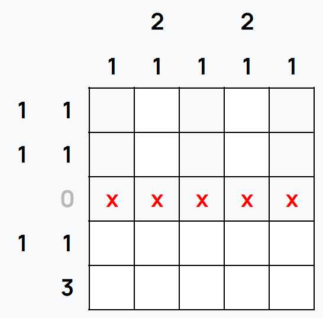
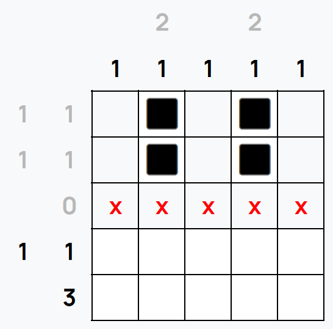
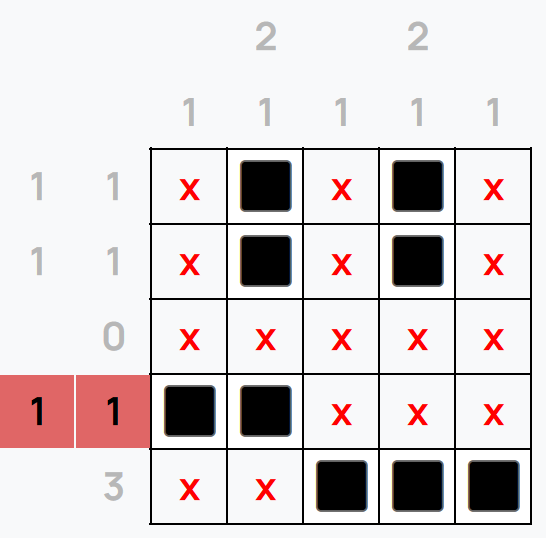
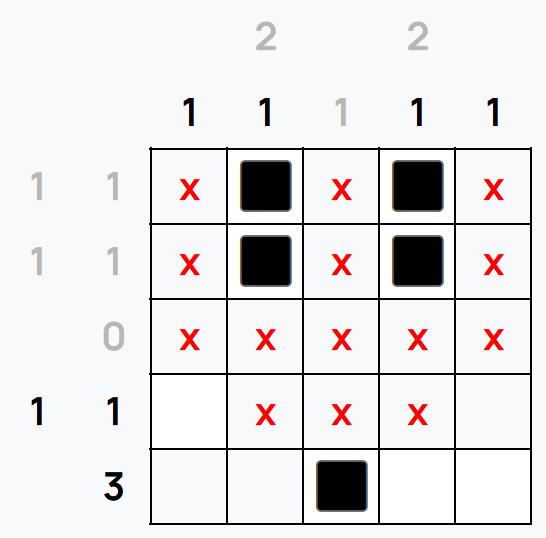
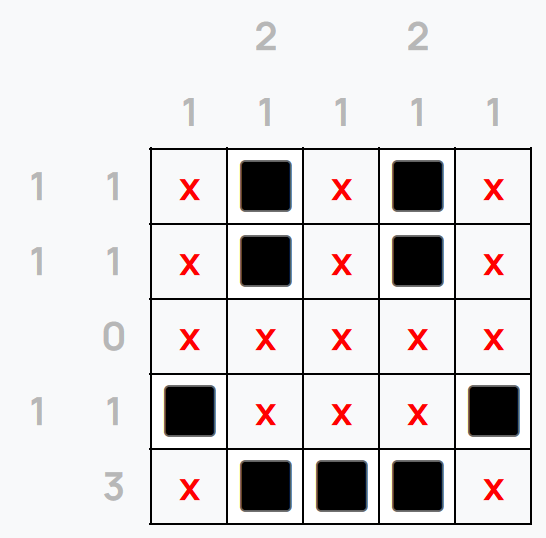

Nonograms are grid puzzles where, pictures are constructed by filling in squares in a grid. Each row and column has a number or set of numbers to show you the groups of squares present in that row or column.
Here's an example puzzle:
The 1st column, C1, is marked with a single 1, meaning only 1 square in that column should be filled.
The column next to it, C2, is marked 2 1, meaning that column should have a group of 2 filled squares, followed by a gap of at least 1 unfilled square, followed by a single filled square, in that order.
The 3rd row, R3, is marked 0, meaning no squares should be filled in that row. We can denote this on the puzzle with an X.
The 0 in R3 is greyed-out to show no further changes to that row are required.
Next, we can look at C2 and C4. Since we know that R3 has no filled squares, we then also know that the group of 2 squares for both columns span across the top two rows. They can't span across the bottom two rows, as there wouldn't be enough space to fit the remaining 1 square.
In doing this, we've also solved R1 and R2. Since we can't place any more squares in those rows without invaliding them, we can mark the rest of the squares with Xs.
R5 is marked with a single 3, and the grid has 5 columns. This means there are only 3 possible positions for that group and the middle square is the only square thats filled across the 3. We can fill that square in.
Looking again at C2, if we filled in the final 1 square on R4, this would mean the group of 3 squares on R5 would span across from C3 to C5. This would leave the square at C1 R4 the only place to fill a square in, which would invalid R4 as the two squares are connected. A similar issue would occur on the other side.
This means we can cross out the squares at C2 R4 and C4 R4...
...fill in the squares at C1 R4 and C5 R4, and complete the puzzle!
